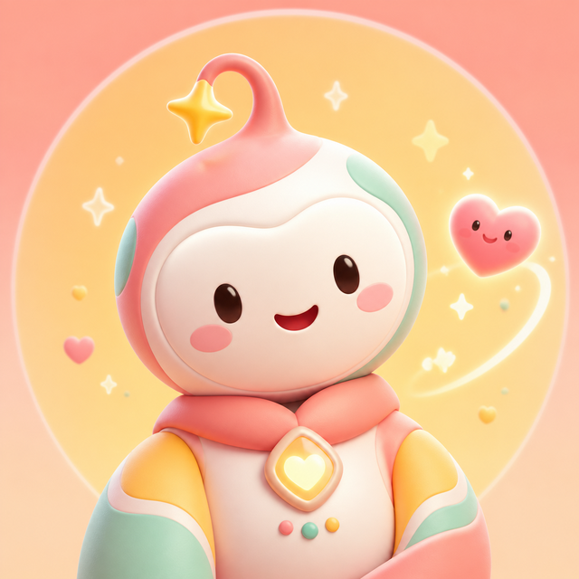

WhatsApp assistant · Hebrew-first
Zoe
Warm, practical help on WhatsApp: reminders, drafts, and the small logistics of a day — in casual Hebrew, and never louder than the question deserves.
FIG. 04

Zoe
WhatsApp assistant · Hebrew-first · Active
- Role
- Everyday assistant — reminders, drafts, small logistics
- Channel
- Language
- Hebrew first · right-to-left aware · emoji-aware
- Runs on
- The Hermes agent framework
- Tone
- Warm, but not noisy
- Status
- Active
Fig. 04b — transcript, translated below
A minute of Zoe
A specimen exchange, written for this page. Real conversations stay where they happened.
אפשר לעזור רגע?
“Can you help for a second?”כן, אני על זה.
“Yes — I'm on it.”תזכורת, ניסוח, או בדיקה קטנה?
“A reminder, a phrasing, or a small check?”What she is for
Small logistics, handled
Zoe takes the ordinary parts of a week: scheduling, reminders, trip ideas, lightweight research, drafting the message you do not want to write twice, and keeping practical work in one place instead of six.
NoteEveryday help, not a help desk. She answers in the app people already have open.
She is designed to feel approachable and human-friendly without pretending to be a human. She says what she did, and she says what she could not do.
How she talks
Hebrew first
Casual Hebrew by default, right-to-left aware, emoji-aware, and willing to answer with a reaction when a small bit of warmth says more than another full paragraph.
Warm, but not noisy.
The tone system is the actual design work. An assistant that answers everything at the same volume becomes furniture; one that answers too much becomes a nuisance. Zoe is tuned to be neither — present when asked, quiet when not.
What she runs on
The Hermes frame
Zoe runs on the Hermes agent framework, with her own configuration, her own memory and her own manners. When the frame underneath her needs surgery — a reply path that lost its context, a bridge that ignored a disappearing message — Bob does it, and she keeps talking.
Cross-reference→ Chapter II, 03. Somebody has to patch the frame.
Her conversations belong to the people having them. Nobody who talks to Zoe is named anywhere on this site, and no real transcript appears here — the exchange above was written for the exhibit.